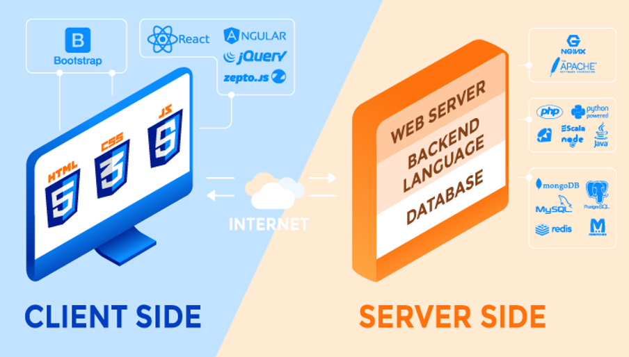

Chapter 9: Technology Stack
Contents
Chapter 9: Technology Stack¶
Unlike most of your other subjects, this subject does not have a pre-defined technology stack you must use.
There is no right or wrong answer as to your choice of technology stacks for your web application.
However, you should consider several factors:
The desires of your client.
The knowledge and experience of your teammates.
The desire to learn something new.
Time and budget limitations.
Like any other decision, the decision for a technology stack requires weighing the options and deciding as a team.
Modern web frameworks are comprised of a frontend framework, backend framework, web server, and data persistence.

Source: RubyGarage
There are many choices available for tech stacks, some of the most popular are detailed below.
Front-End Frameworks¶
Your main two choices are between HTML and CSS, and JavaScript for the front-end. If you choose to use HTML and CSS, Bootstrap is a framework to take work out of development.
There are several JavaScript frameworks to help your development:
Databases¶
Your web application needs a place to store all data (user, configuration, etc. data).
Name |
Type |
|---|---|
Relational |
|
Non-relational |
|
Relational |
Web Servers¶
And lastly, your web application needs a web server to handle requests.
Extra Resources
stackshare.io is a free website your team can use to view the stack companies use and their reviews.